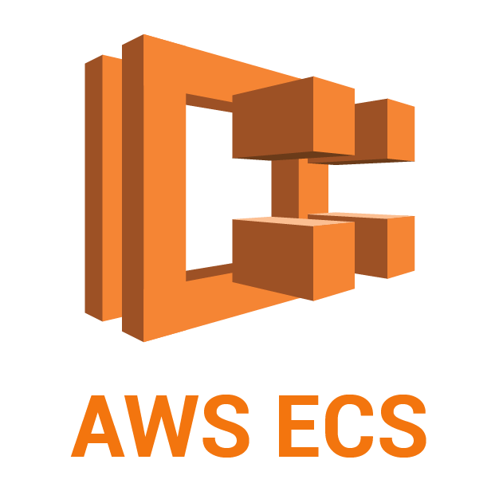
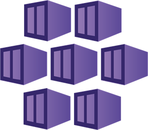
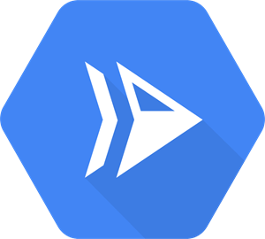

{% extends "../_base_template.html" %}
{% block title %}Lektion 16 - Management-Tools, Ausblick{% endblock %}

{% block sections %}
<section data-markdown>
<textarea data-template>
# <i class="fas fa-graduation-cap"></i> M347 - Container-Tools und -Dienste

## Heutiges Ziel

- Sie kennen ein paar nützliche Management-Tools rund um (Docker-)Container
- Sie wissen grob, was "Kubernetes" ist
- Sie kennen Cloud-Dienste, welche Docker-Images deployen können

</textarea>
</section>

<!-- ----------------------------------------------------------------------------- -->
<section data-markdown>
<textarea data-template>
# <i class="fas fa-graduation-cap"></i> Tools: Portainer und Watchtower

Sie schauen sich folgende Container-Tools genauer an:

* Tools:
  * Portainer.io, Community Edition (CE): https://docs.portainer.io/
  * Watchtower: https://containrrr.dev/watchtower/
* Sie erarbeiten **ein** Tool in der Gruppe. Zeit: **45min**
* Sie stellen das Tool der anderen Gruppe vor: Zeit: **Je 10min**

## Ziele der Expertengruppe:

* Sie wissen, was das Tool macht, zu was es eingesetzt wird und können dies der anderen Gruppe erklären 
* Sie können das Tool live demonstrieren (Installieren Sie sich somit das Tool)

## Ziele der "empfangenden" Gruppe

* Sie haben verstanden, was Ihnen die andere Gruppe gezeigt hat
* Sie haben die wichtigsten Aspekte des vorgestellten Tools gesehen
* Sie stellen Rückfragen bei Unklarheiten oder wenn Sie mehr wissen wollen

</textarea>
</section>

<section data-markdown>
<textarea data-template>
# <i class="fas fa-graduation-cap"></i> Kubernetes: Container-Cluster

Sicher haben Sie schon von "Kubernetes" gehört:


> Kubernetes ist eine portable, erweiterbare Open-Source-Plattform zur Verwaltung von containerisierten Arbeitslasten und Services, die sowohl die deklarative Konfiguration als auch die Automatisierung erleichtert.

Etwas anders ausgedrückt:

* Kubernetes kann Ihre Dienste, Ihre Container, verwalten
* Dabei stellt es die notwendigen (verteilten) Ressourcen zur Verfügung
* und skaliert / überwacht Ihre Container "auto-magisch"

Kubernetes ist der nächste Schritt nach einzelnen und manuell verwalteten Containern: Wenn Ihre Anforderungen
richtig gross werden, und unterschiedliche Lasten zu verschiedenen Zeiten abdecken können, dann ist Kubernetes das Tool
der Wahl.

Aber achtung: **Kubernetes ist sehr komplex und besteht aus einem ganzen Zoo von neuen Konzepten. "Wähle Weise!"**

</textarea>
</section>

<section data-markdown>
<textarea data-template>
# <i class="fas fa-graduation-cap"></i> Kubernetes: Container-Cluster

Aus der Kubernetes-Dokumentation (siehe https://kubernetes.io/docs/concepts/overview/components/):


<i class="far fa-hand-point-right"></i> Kubernetes besteht aus einem knappen Dutzend Komponenten und Dienste.
Viele Cloud-Provider bieten bereits fertige Kubernetes-Umgebungen an.

</textarea>
</section>

<section data-markdown>
<textarea data-template>
# <i class="fas fa-graduation-cap"></i> Container-Dienste in der Cloud

Zum Abschluss noch einen ganz kurzen Überblick über ein paar Cloud-Provider, welche bereits
fixfertige Dienste zum Betreiben von Container- und Kubernetes-Cluster anbieten:

<style>
td {
  vertical-align: middle;
}
</style>

Logo | Name | Link
-----|-------|------
 | Amazon ECS | https://aws.amazon.com/ecs/
 | Azure AKS | https://azure.microsoft.com/de-de/products/kubernetes-service/
 | Google Cloud Run | https://cloud.google.com/run
 | Fly.io | https://fly.io/

<i class="far fa-hand-point-right"></i> Vielmals lohnt es sich, die Angebote der Cloud-Provider zu evaluieren,
anstatt selber eine komplexe Infrastruktur zu bauen.


</textarea>
</section>


{% endblock %}
